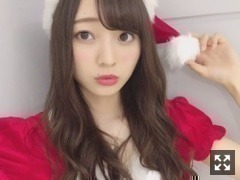
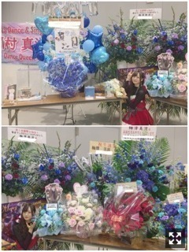
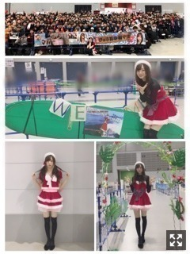
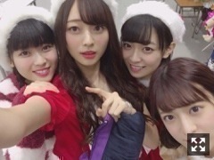
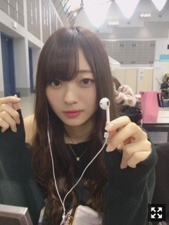

思い込み。梅澤美波
みなさまこんにちは！！
乃木坂46 ３期生の
梅澤美波です！！！！

遅れたサンタさん〜！！
プレゼントなにがほしいですかー！！
さあさあ
何日か前のクリスマスは
世間は賑わっているみたいでしたが
私のクリスマスはお仕事終わりに真っ直ぐ帰宅し１人で過ごしました（笑）
でも握手会でサンタさんなれたし
もう満足！（笑）
２６日になって外出たら
何事も無かったように
ツリーやらサンタさんの飾りやら音楽やら
街から全部消えていて
なんだかすごく悲しくなった( .. )（笑）
みんなはなにしたの〜？？☺︎
最近は１人カラオケ行ったりしました〜
歌って休憩してまた歌って
ひとりで行くとゆったりした曲とか
バラードが好きだから
永遠とそういった曲歌ってる( ¨̮ )
たまみとも最近で２回もいったよ！
失恋お掃除人歌うの！
サササのサ！
もうすぐセンター試験、もうすぐ受験
って方が多くいたの(；；)
頑張れ〜みんな〜！！
頑張れば結果はついてくる！！
あと少しだ！！
わたしもみんなに負けないくらい頑張るから、一緒に頑張ろう☺︎
試験前は好きな曲聴いてリラックスね☺︎
応援してるよ( ˙-˙ )౨！
２３日仙台個握
ありがとうございました！
１８枚目逃げ水最後の個握！
たくさんの方と出逢えた素敵な期間でした☺︎
２部終わりには初めての生誕祭！
こう見えて緊張しいだから話す時は震えちゃうんだけどなんとかがんばった( .. )
伝わってるといいな( .. )
手紙はももこ！
ももこワールド全開でしたありがとう☺︎

お花たち(；；)♡
梅澤がお花に埋もれてるよ〜幸せ
こんなにたくさん。
わたしのために本当に幸せ者です( .. )
細かく撮ったのだけど
載せたい写真が沢山なので今回はこれで失礼します、二分割でもこのお花だらけの画面、幸せです(；；)

きゅうくつなトリミングでごめんなさい(；；)
１番上！大切な写真！！
幸せです！！
レーンにサーフボードあった！！
きゅん！！
レーンでたくさん写真撮ったのだけど
載せきれないのでごめんね( .. )
レーンの飾り付け、
私の名前にちなんだ海らしさ全開で
時間かけて作ってくれたんだろうな〜って思ったらもう嬉しくて嬉しくて、、
本当にありがとう(；；)
今回の服はサンタコスプレ！！
せっかくだから全部サンタ着たくて
毎部全部違う衣装は出来なかったけど
２つ用意してみました☺︎
ごめんね( .. )
キュートめなやつと大人っぽめなやつ( ˙_˙ )
どちらの衣装がお好きですか？☺︎
少し早いサンタさんでした〜
また来年ね！
また来年来るからね！
ってたくさん言ってくださって、
約束っていいなあって思ったよ( .. )
来年も楽しみだなあ〜
来てくださった皆様ありがとうございました！
そしてそして
２６日にセブンネットさんで予約していた
我らが与田の写真集が届きました☺︎
この表紙が欲しくて〜かわいくて(；；)
中身見たらきゅんきゅんだったよ〜
本当にかわいいよ〜
私のお気に入りページは、口に食べかすついてるとこ（笑）
皆さんお手に取って見てみてね！！
見殺し姫の舞台稽古期間の撮影で
セリフも多い中、後から稽古に合流して
大変だったと思うけど
本当によく頑張ったなあと振り返ってた(；；)
本当に素敵な写真集でした(；；)♡
質問コーナー◎
Q.おもちは何つけて食べる？
A.わたしは断然醤油と海苔がすき！昔っから醤油と海苔一筋！
Q.よく甘えてくる３期生は？
A.れんかとたまみと、たまーにあや（笑）
Q.箸とスプーンとフォークとナイフどれがすき？（笑）
A.全部揃って好き！
告知◎
〜雑誌
▽EX大衆 さま ソログラビア
▽ヤングマガジン さま ３期生グラビアジャック
▽B.L.T. さま ３期生振袖カレンダー
▽OVERTURE さま 梅桃グラビア
▽アップトゥボーイ さま 別紙未公開カット
発売中です！！☺︎
▽ BUBKA さま
ソログラビアさせて頂きました！
発売日分かり次第お知らせします☺︎
▽１／４ 日経エンタテインメント！
〜TV
▽１／２ 発掘！お宝ガレリア お正月SP
久保ちゃんと２人で出演させて頂きます！NHKさんの番組にこうして出演させて頂けて光栄です。国宝の謎を探りにある所へ！歴史ってすごい！面白い！と心から思いました。もっと知りたいと思いました、すごく楽しく終始わくわくしながら撮影させて頂きました！年明け、ゆっくりまったりしながらテレビの前の久保と梅澤を見てくれたら嬉しいなあ〜☺︎
先日、若月さんの舞台を
観に行ってきました！！
軍団員３人で仲良くわくわくしながら☺︎
２時間半笑いっぱなし、
すごくツボな場面があって
ずっと真似してた（笑）
若月さん可愛くって可愛くって
出演者さんの中に紛れてるとき
小柄で華奢でめちゃ可愛くて
色々な若月さんが見られてハッピーでした(；；)♡
犬夜叉のときとは全く違う若月さん
今回の舞台でも色々な若月さんが見られて
どんな人にでも変身できちゃう若月さん
本当にかっこよかったです！！
残りあと少し！
３０日まで頑張ってください(；；)
それと昨日ね〜
たまみとかえでと遅れたクリスマスパーティーした〜
タコパ！！またかよって感じだよね（笑）
楽しかった〜
私が好きな具は、
明太チーズ！！！めちゃくちゃ美味しい！！
でも昨日シーチキンマヨいれてみたら
すっごい美味しくてビックリ！
みなさんもぜひ！！

レーン行く途中！！
いつもこんな感じ！！
わちゃわちゃ！
年内最後ということで
今日は最後に少し話させてください( .. )
今年１年、
ありがとうございました！
◎プリンシパル
◎個人PV
◎初の３期生楽曲、MV
◎初のジャケット撮影
◎初のレコーディング
◎初の握手会
◎３期生だけのNOGIBINGO!8
◎初のソログラビア
◎全国ツアーの参加
◎夢のファッション誌の撮影
◎若様軍団結成、ユニット曲への参加
◎３期生の本格舞台『見殺し姫』
◎３期生だけのイベント出演
◎FNS歌謡祭への出演
思い返せば書ききれないほどたくさんのお仕事をさせて頂きました。
まるまる１年を
乃木坂46として過ごした初めての年。
何もかもが初めてで
目の前の事に必死だったなあ( .. )
最近は１からやってみて初めて
どれだけ恵まれた環境にいるのか
今たくさんのお仕事ができているのか
経験し学んだりもしました
こんなに自分と向き合った１年は初めてでした！
自分の顔もそうだし
性格も、全部受け入れなきゃいけなくて、
誰よりも自分を理解することが必要で
今までは知らなくていい自分もいたりしたけど
乃木坂として活動する上でそうする訳にはいかなくて
自分の嫌いなところとか
全部向き合ってきて
自分ってこういう時こういう感情になるんだ
こんな風に思うんだ
って初めての自分と出会ったりもした！
どんな自分も受け入れていかなくちゃいけないんだって
自分を知ることが大切だと思いました
これからもずっとそう、
なりたい自分になれるように努力しようって思えました！
楽しいことより
辛いことが目立つことも多いです、でも
乃木坂のために活動できていることがとても幸せだから
どんなに悩むことがあっても
楽しいと思える瞬間が沢山あったから、
支えてくれる人がたくさんいたから、
私は今もここにいられてる☺︎！
喜ばせたい人がたくさんいるんです☺︎
お仕事がある度に、
早く報告をしたいって思える
ファンの方々の存在が頭に浮かびます、
それが私の活力でした。☺︎
皆様がいて私は頑張れています！
私の頑張る理由です( ˙-˙ )౨
ファンの方がいて見られた景色がたくさんありました。
これは私が身に染みて１番感じています、
本当に感謝しきれないです( .. )
なにかあればコメントを読みます
そこには私の大切な方達からの言葉がたくさんあります
定期的にある握手会が楽しみで仕方ないです
直接声を聞ける、話せる大切な時間だからです
私の推しメンタオルもうちわもボードも
味方がいるから怖くないって思えた、心から楽しめました
この方達がいれば私はなんでもやっていける、私って無敵だ( ˙-˙ )౨！って思えます！！
たくさんのパワーを本当にありがとうございます！いつだって元気になれました！
２０１８年は
まだどうなるか全然分からないけど
２０１７年とは全く違った未来が待っていると思うし
色々試される時期になっていくのかなって
いつまでも今の環境に甘えていられないです
だから今まで経験したこと、
これから経験すること全部吸収して
頑張っていきたいです
先輩方を見て、
すぐそばに居る３期生を見て、
刺激を受ける毎日。
自分も日々変わっていかなきゃなと思います！もっともっと頑張ります！
ファンの皆様にとって
来週梅澤がテレビ出るから頑張ろう！
とか
今月末梅澤が雑誌載るから楽しみに頑張ろう！
とか
来月梅澤と握手会で会えるから頑張ろう！
とか
下を向きがちなときでもこんな風に思ってもらえる存在でいられたらいいなあ( .. )
これからも大切にさせて下さい( ˙-˙ )౨
梅澤がんばります！！☺︎
だから一緒に頑張っていこうね☺︎
夢はまだまだたくさんあります
今は程遠すぎる夢もたくさんあります
お仕事していくうちにどんどん夢が増えていきます
だから私の夢リストが増えるスピードに負けないくらい
２０１８年はたくさん夢を叶えていきたいです！！
みんなを飽きさせないようにがんばる！
私が書いた全部の文が
私の想いの通りに伝わるとは限らないけど
今皆様に伝えられる場はここしかないので
書きました！長くてごめんなさい！
伝わりますように！

２０１８年、ともに１９歳になる私を
今後もよろしくお願い致します！！
イヤホンどーぞ！（笑）
どんなときも
笑っていればきっといいことあるはず！
たくさん笑うぞー！
初夢にわたし出てくるようにちゃんと頭に考えててよねー！夢で逢おうねー！
（笑）
おやすみ！
わたしが今見ている世界は物凄く狭いんだなって気づきました
新しいものを見て自分の視野の狭さにやっと気づく、一歩外に出れば全然違う場所があるんだあ
悔しいって思って初めて成長できるのかな、あんまり好きではない感情だったけど大切だなって学びました。☺︎
みんな一緒にがんばろな〜
Original：https://www.nogizaka46.com/s/n46/diary/detail/42545?ima=0516&cd=MEMBER